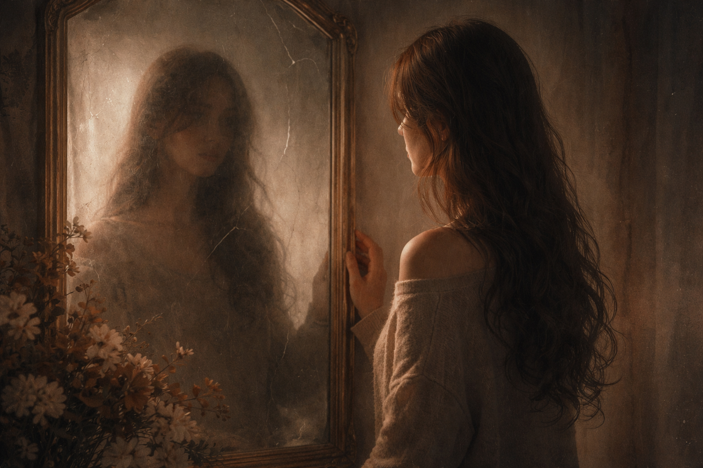

In crowded rooms of whispered lies, Truth tip-toes, wearing thin disguise. Two souls I cherished, side by side, Now meet in corners, where secrets hide.
A kindred mirror, once like mine, We laughed in stars, we drank in time. But now those eyes avoid my own- A garden grown from borrowed stone.
A chapter closed, a book once read, Of memories warm and words once said. I turned the page, I let it be- Yet still it stings, invisibly.
It isn't love that hurts me most, It's loyalty turned silent ghost. The tremor comes not from the past, But from the bond that didn't last.
So here I stand, with steady breath, Guarding trust from quiet theft. For ties can snap without a sound- A fragile vase that meets no ground.
But I will rise above this ache, With deeper roots than hearts that fake. For those who give with open hands Deserve truth, not shifting sands.
And when the mirror meets my eyes, I'll choose self-worth, not hidden ties. Storms reveal the hearts that're true- And someday, shadows answer too.